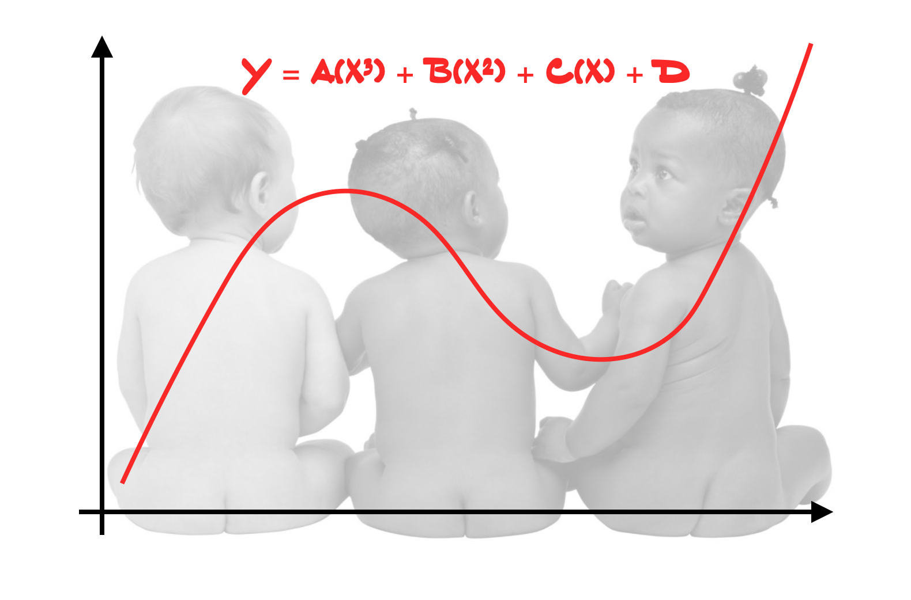

Assignment 02
POLYNOMIAL EFFECTS
The goal of this assignment is to give you experience fitting, interpreting, and evaluating models with polynomial effects. This assignment is worth 15 points.
Copyright EPSY 8252, 2024
Copyright EPSY 8252, 2024
In this assignment, you will use the data from the file fertility.csv to explain variation in in infant mortality rates.
Instructions
Create a project directory called “assignment-02”. Within this directory, create a document (this can be a QMD, or word-processed documents) to respond to each of the questions below.
- Your project directory should be well organized (e.g., the BIB and CSL files should be in the
assetsdirectory). - Your project directory should have a README file that is descriptive of the project.
- If you use a QMD document, all code chunks should include a label
#| label:and include comments. If you create a word-processed document, include a commented, organized script file in thescriptsdirectory of your syntax for the assignment.
You need to submit a zipped version of your entire assignment-02 project directory.
- You will receive 1 point for a well-organized project directory, including a README file.
- You will receive 1 point for a QMD or R script file that includes clean, organized, and commented syntax.
Model 1: Linear Effect of Female Education Level
Create a scatterplot showing the relationship between female education level and infant mortality rates. Does this plot suggest problems about meeting the assumption of linearity? Explain.
Regress infant mortality rates on female education level. For this model, posit a linear effect of female education level on infant mortality rate (Model 1). Create the scatterplot of the standardized residuals versus the fitted values from Model 1.
Does this plot suggest problems about meeting the assumption that the average residual is zero at each fitted value? Explain.
Model 2: Quadratic Effect of Female Education Level
Regress infant mortality rates on female education level. For this model, posit a quadratic effect of female education level on infant mortality rate (Model 2). Write the fitted equation using Equation Editor (or some other program that correctly types mathematical expressions).
Compute, report, and interpret the likelihood ratio between Model 2 and Model 1.
Carry out a likelihood ratio test to compare Model 1 and Model 2. Report the results from this test in a nicely formatted table.
Model 3: Control for Differences in Gross National Income (GNI)
Regress infant mortality rates on female education level. For this model, posit a quadratic effect of female education level on infant mortality rate, and also control for differences in Gross National Income (Model 3). (Use all four levels of GNI.) Write the fitted equation using Equation Editor (or some other program that correctly types mathematical expressions).
Carry out a likelihood ratio test to compare Model 2 and Model 3. Add the results from this test to the table you created in Question #6.
Adopting a Model
Based on the results of the two likelihood ratio tests, which model will you adopt? Explain.
Create the density plot of the marginal distribution of the standardized residuals for your adopted model, as well as the scatterplot of the standardized residuals versus the fitted values. Place these plots side-by-side in your printed document and, for the purposes of captioning, etc. treat them as two subfigures within a single figure.
Based on the plots you created in Question 10, evaluate and comment on the tenability of each of the model assumptions.
Presenting the Results
Mimic the format and structure of either of the first two tables in the Presenting Results from Many Fitted Regression Models section of the document Creating Tables to Present Statistical Results to create a table to present the numerical information from the three models you fitted in this assignment. Make sure the table you create also has an appropriate caption. If the table is too wide, change the page orientation in your word processing program to “Landscape”, rather than changing the size of the font. (Note: Only this table should be presented in landscape orientation…not your entire assignment!)
Create a publication quality plot that displays the fitted curves from Model 3. Display four separate lines to show the effect of Gross National Income. The four lines should be displayed using different linetypes or colors (or both) so that they can be easily differentiated in the plot.